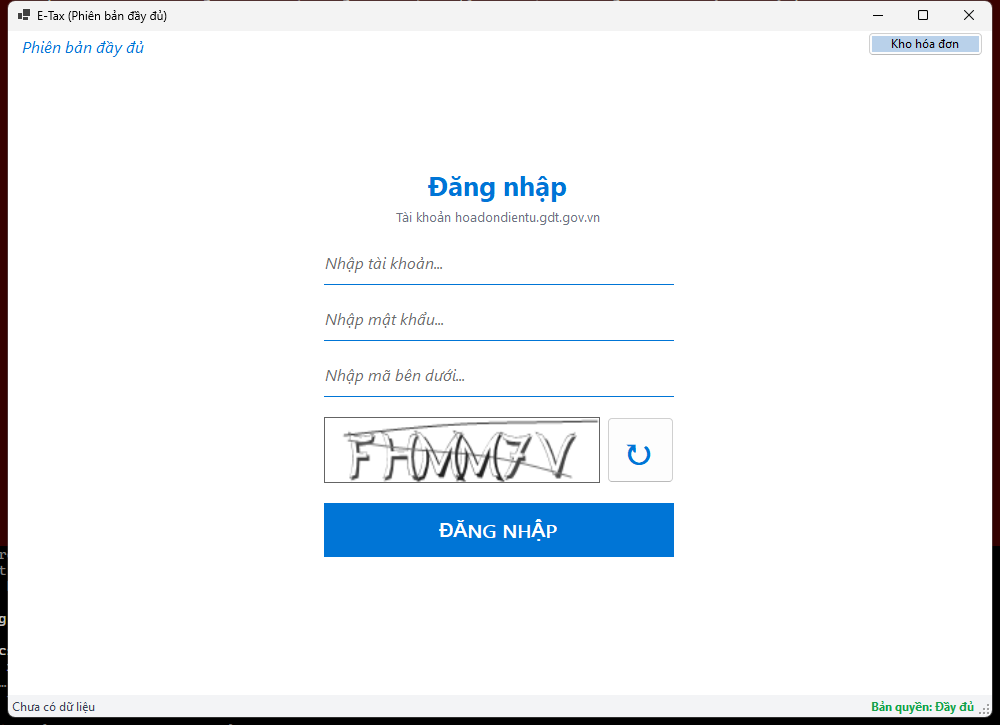

Trạng thái: ✅ DONE · CR-001 · 2026-11-25
Không đổi giao diện. Cổng hoadondientu.gdt.gov.vn đổi cách nhận yêu cầu; app được cập nhật cho khớp trang chính thức.
| Task | Thay đổi | Lỗi trước đó |
|---|---|---|
| T-001.1 | Địa chỉ gốc :30000/ → /api/ | Không tải được captcha |
| T-001.3 | Header request-id, Action, End-Point | Đăng nhập 403 |
| T-001.4 | End-Point /tra-cuu/tra-cuu-hoa-don cho lệnh tra cứu; log lỗi | Tra cứu 500 |
| T-001.5 | Sắp xếp chỉ theo tdlap:desc | 500 "Không hỗ trợ sắp xếp theo nhiều trường" |
| T-001.2 | Kiểm tra thật: đăng nhập + tra cứu | Bán ra 16 HĐ, mua vào 1 HĐ |
